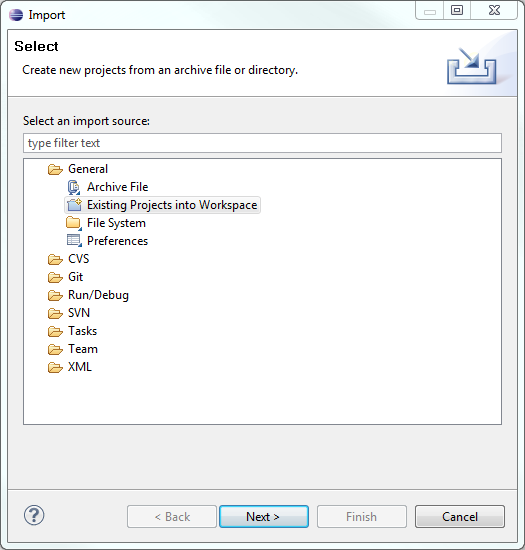
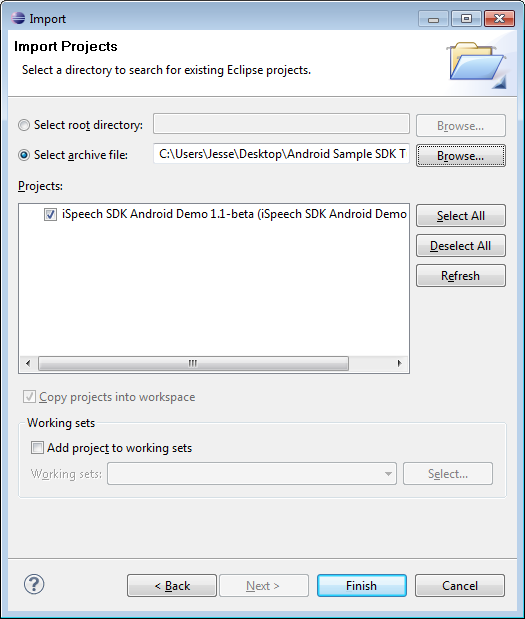
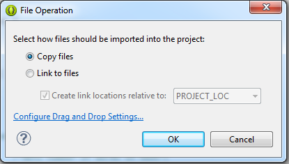
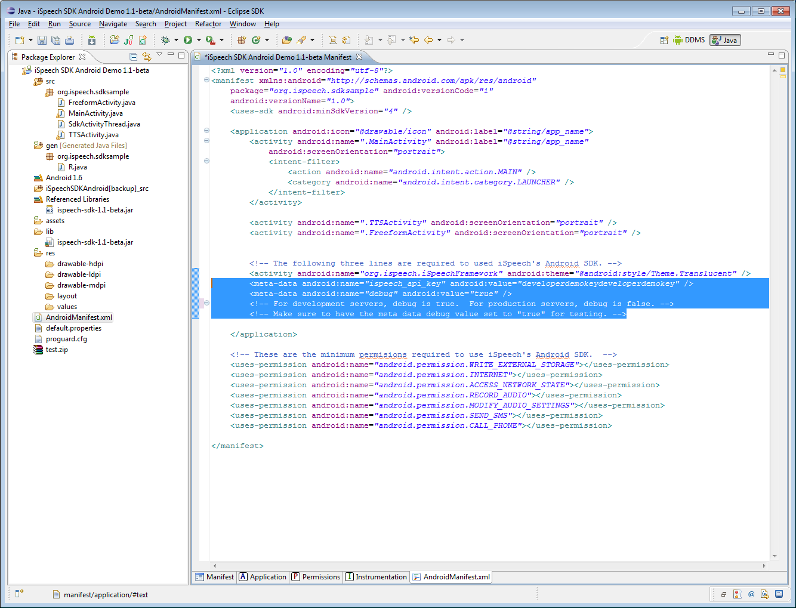
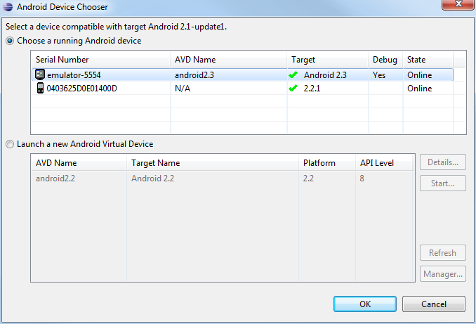
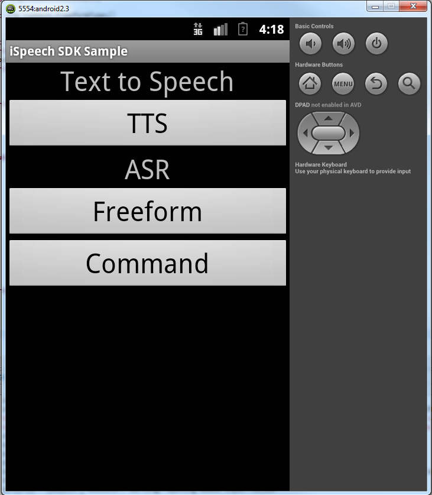
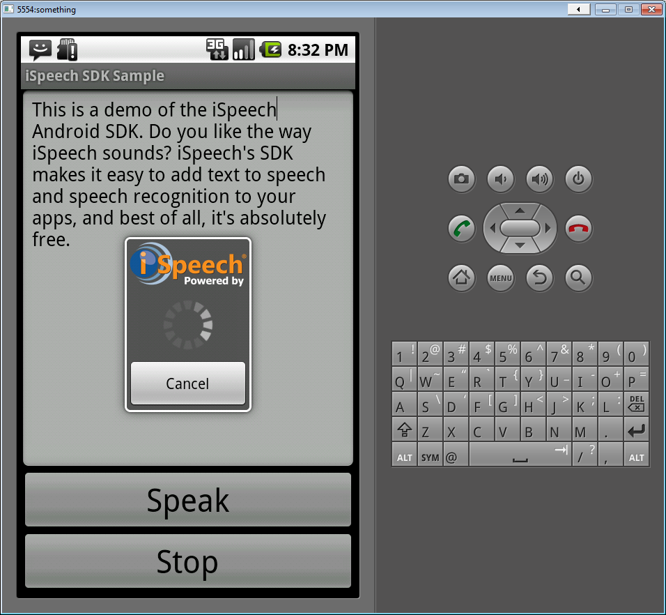
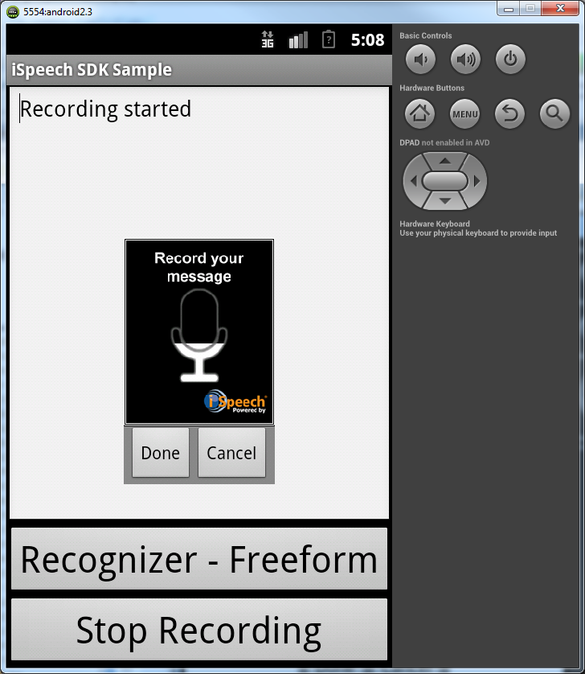

For more information visit: http://www.ispeech.org/developers/
Requirements:
Requirements:
- Eclipse IDE
- ADT plugins
- Android SDK 2.0 or higher
- Android Support Library v4
- iSpeech API Key, which can be obtained from http://www.ispeech.org/developers/.
Step 2: Import the iSpeech-SDK-1.3.9-sampleApp Project into Eclipse
In Eclipse, on the File menu: Click File > Import... > General > Existing Projects into Workspace > Android Project
Click Next, then check the "Select archive file" option and click on "Browse..." to find the zip file.
Click Finish to import the iSpeechAndroidDemo Project.
Step 3: Import the android support library.
Open Android SDK Manager and download the support library

Drag and drop \extras\android\support\v4\android-support-v4.jar to the libs folder in your project view. Select copy in the box that pops up.
Step 4: Set the API Key for demo project.
Double click on the AndroidManifest.xml file. Modify the value of "apikey" metadata to the iSpeech API Key you obtained from http://www.ispeech.org/developers/.
Step 5: Run the demo.
In Eclipse, Click Run > Run As > Android Application
Select a preferred Android Device. Then click OK.

